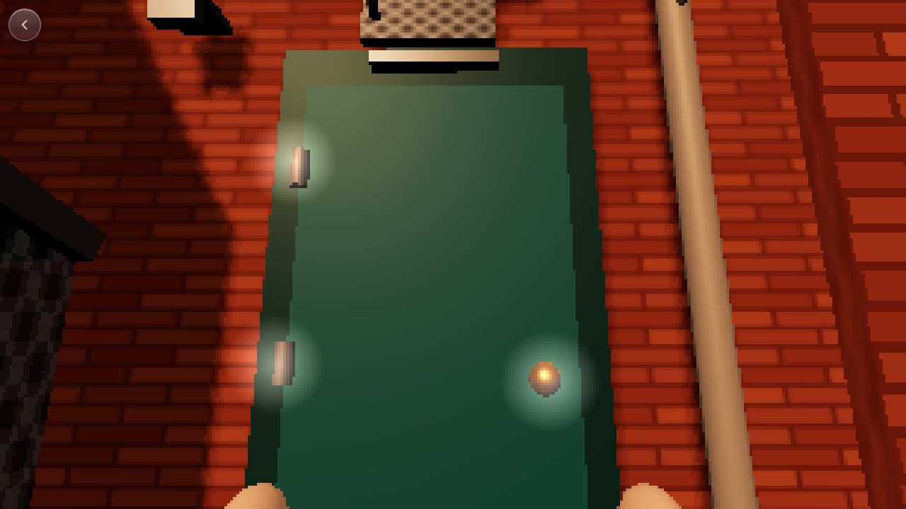

AW-STUDY-0026
The School Jump
A memory of climbing the old school at dusk, told in a few minutes on the night of 2026-10-23 and built as a game. It is a super-stylized version: no real names, no photos of the real building, and the gas pipe became a drainpipe.

How it plays


- The climb. Tap a hold to grab it. Holds you can reach have a worn shine. A wrong grab or the wobbly lamp tires your arms: the view sways, you breathe harder, your little inner voice cheers you on. Too many and you slide down and start again.
- Over the top. The camera rises over the coping from where your hands were and keeps going up into the iso roof. No cut.
- The roof. Tap to walk. 21 tennis balls on the main roofs and 5 on the gym. Carry three at a time; tap your dog in the field to throw one down. The pile by the dog is the count.
- The cars. One every ten seconds, alternating directions, so you can learn the rhythm. If a headlight is on you, they see you: the car brakes, its tail lights flare, a heartbeat starts and a ring at your feet fills. Stay seen two seconds and a grown-up shouts you off the roof. Walls, the stairwell and air handlers cast headlight shadows to hide in.
- The gym and the hang-drop. Climb the gym wall, then hang off its edge. The one overlay, a small glass timing bar, shows only while you hang. Let go in the gold zone to drop onto the entrance canopy, where the last five balls and the gold coin wait.
- The gold coin. The coins are Daddy's core memories. It lifts out of the world toward you, turns in a burst of light and sparkles to a chiming fanfare, and is kept. It counts with Grace's basement coins.
- The Hollywood ending. Climb the small wall back to the main roof, then the same way home: conduit, grate, door, past the hydro cage under its sheet-metal hood. Feet on the grass, dog at your side. The alternate ending is still to come.
How it shows information
- Diegetic: headlights sweep the roof on a steady rhythm, engines rise before a car arrives, the dog's pile grows, the lamp rattles when it's loose.
- Meta: tired arms are breathing, sway and trembling hands; being seen is a heartbeat; the coin reward is a feeling, not a label.
- Spatial: the shine on reachable holds and the ring at your feet when a car is looking.
- Overlay: only the hang-drop timing bar, because the timing has to be exact. Zero words on screen; the voice speaks.